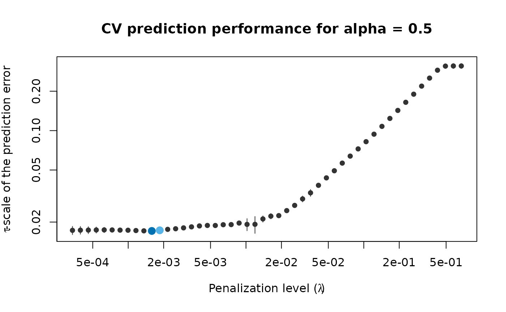
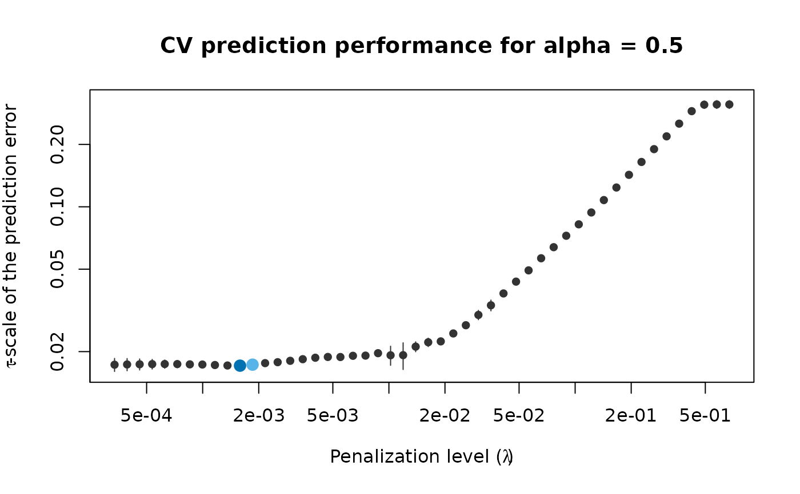

Plot the coefficient path for fitted penalized elastic net S- or LS-estimates of regression.
# S3 method for pense_fit
plot(x, alpha, ...)Arguments
- x
fitted estimates.
- alpha
Plot the coefficient path for the fit with the given hyper-parameter value. If missing of
NULL, the first value inx$alphais used.- ...
currently ignored.
See also
Other functions for plotting and printing:
plot.pense_cvfit(),
prediction_performance(),
summary.pense_cvfit()
Examples
# Compute the PENSE regularization path for Freeny's revenue data
# (see ?freeny)
data(freeny)
x <- as.matrix(freeny[ , 2:5])
regpath <- pense(x, freeny$y, alpha = 0.5)
plot(regpath)
 # Extract the coefficients at a certain penalization level
coef(regpath, lambda = regpath$lambda[[1]][[40]])
#> (Intercept) lag.quarterly.revenue price.index
#> -6.6475338 0.2411667 -0.6985229
#> income.level market.potential
#> 0.7098337 0.9619783
# What penalization level leads to good prediction performance?
set.seed(123)
cv_results <- pense_cv(x, freeny$y, alpha = 0.5,
cv_repl = 2, cv_k = 4)
plot(cv_results, se_mult = 1)

# Extract the coefficients at the penalization level with
# smallest prediction error ...
coef(cv_results)
#> (Intercept) lag.quarterly.revenue price.index
#> -6.8111663 0.2347348 -0.7027042
#> income.level market.potential
#> 0.7100893 0.9803936
# ... or at the penalization level with prediction error
# statistically indistinguishable from the minimum.
coef(cv_results, lambda = '1-se')
#> (Intercept) lag.quarterly.revenue price.index
#> -9.3812401 0.2070433 -0.6733309
#> income.level market.potential
#> 0.6511531 1.2139552
# Extract the coefficients at a certain penalization level
coef(regpath, lambda = regpath$lambda[[1]][[40]])
#> (Intercept) lag.quarterly.revenue price.index
#> -6.6475338 0.2411667 -0.6985229
#> income.level market.potential
#> 0.7098337 0.9619783
# What penalization level leads to good prediction performance?
set.seed(123)
cv_results <- pense_cv(x, freeny$y, alpha = 0.5,
cv_repl = 2, cv_k = 4)
plot(cv_results, se_mult = 1)

# Extract the coefficients at the penalization level with
# smallest prediction error ...
coef(cv_results)
#> (Intercept) lag.quarterly.revenue price.index
#> -6.8111663 0.2347348 -0.7027042
#> income.level market.potential
#> 0.7100893 0.9803936
# ... or at the penalization level with prediction error
# statistically indistinguishable from the minimum.
coef(cv_results, lambda = '1-se')
#> (Intercept) lag.quarterly.revenue price.index
#> -9.3812401 0.2070433 -0.6733309
#> income.level market.potential
#> 0.6511531 1.2139552